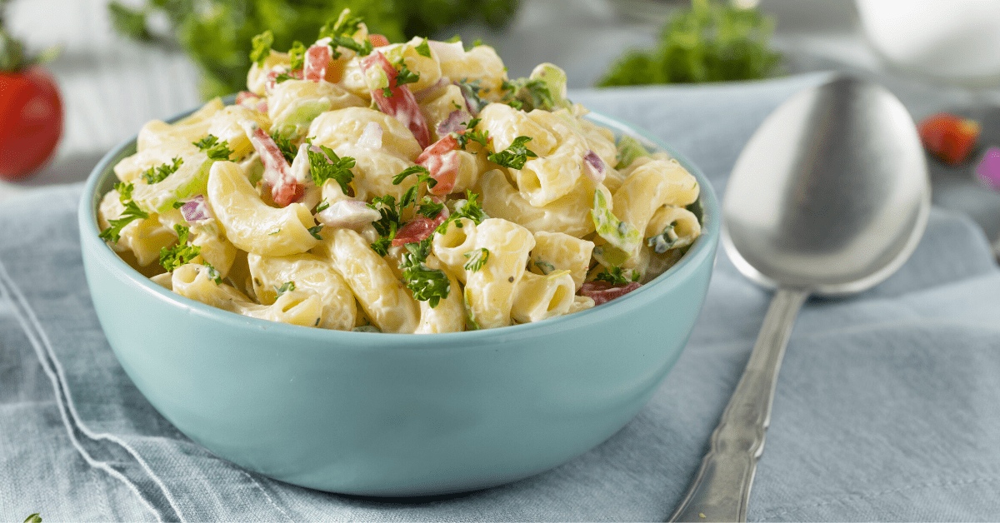

Maginificent Macaroni Salad

Magnific Macaroni Salad To eat everyday
This recipe for macaroni salad with egg is a slightly sweet, classic macaroni salad.
Ingredients
- 3 cups elbow macaroni
- 1 ½ cups mayonnaise
- ⅓ large onion, minced
- ¼ cup chopped fresh parsley
- 2 tablespoons prepared yellow mustard
- 2 teaspoons rice vinegar
- 1 teaspoon white sugar, or more to taste
- ¾ teaspoon celery seed
- ½ teaspoon salt
- 3 hard-cooked eggs, chopped
Recipe instructions
- Bring a large pot of lightly salted water to a boil. Cook macaroni in the boiling water, stirring occasionally until cooked through but firm to the bite, about 8 minutes. Drain.
- Rinse macaroni in cold water until cool; drain.
- Stir mayonnaise, onion, parsley, mustard, rice vinegar, sugar, celery seed, and salt together in a bowl. Add macaroni and eggs and stir to coat.
- Chill in the refrigerator for 30 minutes before serving.
Return to main page